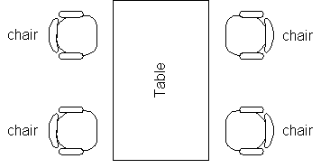
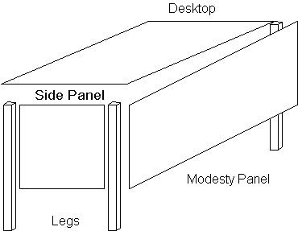
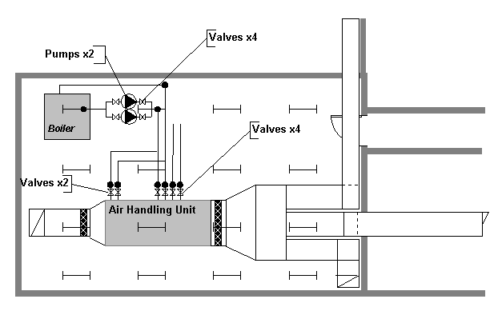

In the IfcProductExtension schema, the IfcElement class is decomposed into a number of subtypes. One of these is the IfcFurnishingElement from which are developed the IfcFurniture and IfcSystemFurnitureElement classes.
A furniture object (instance of the IfcFurniture class) is considered to be a discrete item of furniture in its own right (table, chair, etc.). A system furniture element object (instance of the IfcSystemFurnitureElement class) is an identifiable item (modesty panel, side, desktop etc.) that participates in the assembly of a discrete item of furniture.

Each IfcFurniture object and each IfcSystemFurnitureElement object is of a particular type. It may be a chair, desk, table etc for discrete furniture or modesty panel, side panel, desktop etc. for system furniture. Specification of the type is left to the user of the application providing the information. For applications however, there are a number of predefined property sets for types of furniture that can be assigned to furniture objects. Other property sets may be defined as necessary.

An IfcAsset allows for the grouping of objects to form a unit that has an identifiable financial value and/or upon which specific facilities management operations take place.

Each asset carries a unique identifier, cost,ownership, location and other information that is required.
An IfcInventory provides a list of objects of a particular type, the type of objects that are contained being identified by the IfcInventoryEnum. This identifies that either assets, furniture or spaces are recorded within the inventory. The actual objects that are included are determined by the IfcInventorySelect type which is driven by the enumerated value selection.
Each inventory has one or more responsible persons and an organizational jurisdiction (which is valuable in facilities management situations where more than one functional group or organization is concerned).